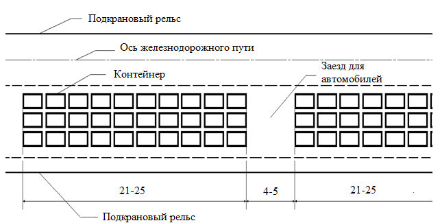
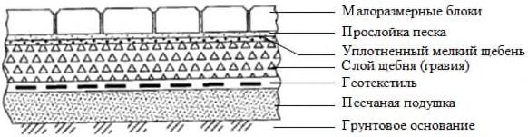
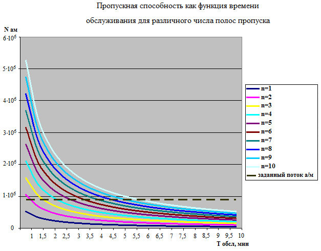

СП 262.1325800.2016 «Контейнерные площадки и терминальные устройства на предприя»
О документе: разработчики, утверждение, регистрация, ключевые слова
СВОД ПРАВИЛ
СП 262.1325800.2016
Издание официальное
1 ИСПОЛНИТЕЛЬ - Закрытое акционерное общество «Проектноизыскательский и научно-исследовательский институт промышленного транспорта» (ЗАО «ПРОМТРАНСНИИПРОЕКТ»)
2 ВНЕСЕН Техническим комитетом по стандартизации ТК 465 «Строительство»
3 ПОДГОТОВЛЕН к утверждению Департаментом градостроительной деятельности и архитектуры Министерства строительства и жилищнокоммунального хозяйства Российской Федерации (Минстрой России)
4 УТВЕРЖДЕН приказом Министерства строительства и жилищнокоммунального хозяйства Российской Федерации от 3 декабря 2016 г. № 886/пр и введен в действие с 4 июня 2017 г.
5 ЗАРЕГИСТРИРОВАН Федеральным агентством по техническому регулированию и метрологии (Росстандарт)
6 ВВЕДЕН ВПЕРВЫЕ
В случае пересмотра ( замены ) или отмены настоящего свода правил соответствующее уведомление будет опубликовано в установленном порядке. Соответствующая информация , уведомление и тексты размещаются также в информационной системе общего пользования - на официальном сайте разработчика ( Минстрой России ) в сети Интернет
© Минстрой России, 2016
Настоящий нормативный документ не может быть полностью или частично воспроизведен, тиражирован и распространен в качестве официального издания на территории Российской Федерации без разрешения Минстроя России
Дата введения 2017-06-04
УДК 624.96
ОКС 55.180
Ключевые слова: контейнерные площадки, устройства терминальные, контейнер универсальный, контейнер специализированный, контейнер, контейнерный пункт, предприятия промышленности, транспорт, контейнеровоз
Руководитель организации-разработчика
ЗАО «ПРОМТРАНСНИИПРОЕКТ»
| Директор | В.А. Сидяков | |
|---|---|---|
| Руководитель разработки | Зам. директора по науке | Л.А. Андреева |
| Исполнитель | Начальник отдела Комплексных исследований, стандартизации и логистического сопровождения проектов | И.П. Потапов |
Введение
Настоящий свод правил содержит правила по проектированию и строительству контейнерных площадок и терминальных устройств на предприятиях промышленности и транспорта.
Свод правил разработан в развитие требований СП 37.13330.2012 «СНиП 2.05.07-91* Промышленный транспорт».
Свод правил разработан авторским коллективом ЗАО «Промтрансниипроект» (руководитель темы - канд. техн. наук В.А. Сидяков , д-р техн. наук Л.А. Андреева , д-р техн. наук М.И. Шмулевич , инж. И.П. Потапов , инж. В.В. Синайский , инж. А.В. Багинов ).
C В О Д П Р А В И Л
Правила проектирования и строительства
Container yard and terminal devices in industrial and transport manufacture. Terms of design and construction
1Область применения
Настоящий свод правил устанавливает правила проектирования и строительства новых и реконструкции существующих контейнерных площадок на территории Российской Федерации.
Настоящий свод правил не распространяется на контейнерные площадки морских и речных портов.
2Нормативные ссылки
В настоящем своде правил использованы нормативные ссылки на следующие документы:
ГОСТ 24.104-85 Единая система стандартов автоматизированных систем управления. Автоматизированные системы управления. Общие требования
ГОСТ 9128-2009 Смеси асфальтобетонные дорожные, аэродромные и асфальтобетон. Технические условия
ГОСТ 9238-2013 Габариты железнодорожного подвижного состава и приближения строений
ГОСТ 18477-79 Контейнеры универсальные. Типы, основные параметры и размеры
ГОСТ 20231-83 Контейнеры грузовые. Термины и определения
ГОСТ 24390-99 Краны козловые электрические контейнерные. Основные параметры и размеры
ГОСТ 25912.0-91 Плиты железобетонные предварительно напряженные ПАГ для аэродромных покрытий. Технические условия
ГОСТ 27555-87 Краны грузоподъемные. Термины и определения
ГОСТ 30302-95. Контейнеры специализированные. Типы, основные параметры и размеры
СП 262.1325800.2016
ГОСТ Р 50776-95 (МЭК 839-1-4-89) Системы тревожной сигнализации. Часть 1. Общие требования. Раздел 4. Руководство по проектированию, монтажу и техническому обслуживанию
ГОСТ Р 52202-2004 Контейнеры грузовые. Термины и определения
ГОСТ Р 53350-2009 Контейнеры грузовые серии 1. Классификация, размеры и масса
ГОСТ Р ИСО 17363-2010 Применение радиочастотной идентификации (RFID) в цепи поставок. Контейнеры грузовые
СП 1.13130.2009 Системы противопожарной защиты. Эвакуационные пути и выходы (с изменением № 1)
СП 3.13130.2009 Системы противопожарной защиты. Система оповещения и управления эвакуацией людей при пожаре. Требования пожарной безопасности
СП 4.13130.2013 Системы противопожарной защиты. Ограничение распространения пожара на объектах защиты. Требования к объемнопланировочным и конструктивным решениям
СП 5.13130.2009 Системы противопожарной защиты. Установки пожарной сигнализации и пожаротушения автоматические. Нормы и правила проектирования (с изменением № 1)
СП 12.13130.2009 Определение категорий помещений, зданий и наружных установок по взрывопожарной и пожарной опасности (с изменением № 1)
СП 14.13330.2014 «СНиП II-7-81* Строительство в сейсмических районах» (с изменением № 1)
СП 18.13330.2011 «СНиП II-89-80* Генеральные планы промышленных предприятий»
СП 28.13330.2012 «СНиП 2.03.11-85 Защита строительных конструкций от коррозии» (с изменением № 1)
СП 32.13330.2012 «СНиП 2.04.03-85 Канализация. Наружные сети и сооружения» (с изменением № 1)
СП 37.13330.2012 «СНиП 2.05.07-91* Промышленный транспорт»
СП 43.13330.2012 «СНиП 2.09.03-85 Сооружения промышленных предприятий»
СП 95.13330.2011 Бетонные и железобетонные конструкции из плотного силикатного бетона
СП 131.13330.2012 «СНиП 23-01-99* Строительная климатология» (с изменением № 2)
Примечание - При пользовании настоящим сводом правил целесообразно проверить действие ссылочных документов в информационной системе общего пользования - на официальном сайте федерального органа исполнительной власти в сфере стандартизации в сети Интернет или по ежегодному информационному указателю «Национальные стандарты», который опубликован по состоянию на 1 января текущего года, и по выпускам ежемесячного информационного указателя «Национальные стандарты» за текущий год. Если заменен ссылочный документ, на который дана недатированная ссылка, то рекомендуется использовать действующую версию этого документа с учетом всех внесенных в данную версию изменений. Если заменен ссылочный документ, на который дана датированная ссылка, то рекомендуется использовать версию этого документа с указанным выше годом утверждения (принятия). Если после утверждения настоящего свода правил в ссылочный документ, на который дана датированная ссылка, внесено изменение, затрагивающее положение, на которое дана ссылка, то это положение рекомендуется применять без учета данного изменения. Если ссылочный документ отменен без замены, то положение, в котором дана ссылка на него, рекомендуется применять в части, не затрагивающей эту ссылку. Сведения о действии сводов правил целесообразно проверить в Федеральном информационном фонде стандартов.
3Термины и определения
В настоящем своде правил применены термины по ГОСТ 20231, ГОСТ 27555, ГОСТ Р 52202, а также следующие термины с соответствующими определениями:
- 3.1автоконтейнеровоз
- Автомобиль-тягач в сцепе с прицепом или полуприцепом, предназначенный для перевозки контейнеров.
- 3.2вилочный погрузчик
- Малогабаритная машина для загрузки и разгрузки контейнеров.
- 3.3грузовые вагоны
- Вагоны, предназначенные для перевозки грузов, такие как крытые вагоны, полувагоны, платформы, вагоны-цистерны, вагоны бункерного типа, изотермические вагоны, зерновозы, транспортеры, контейнеровозы, специальные вагоны грузового типа.
- 3.4грузовая контейнерная перевозка
- Грузоперевозка с использованием контейнеров.
- 3.5грузообработка
- Операции по приемке, отгрузке, идентификации товара, фасовке, маркировке, сортировке, переупаковке, пакетированию, паллетированию товаров, комплектации заказов, погрузо-разгрузочные работы, контроль количества и качества доставленных грузов.
- 3.620-футовый эквивалент ДФЭ, TEU
- Единица измерения емкости контейнерной площадки.
- 3.7емкость контейнерной площадки
- Единовременный запас хранения контейнеров, который измеряется в TEU (ДФЭ).
- 3.8железнодорожный (автомобильный) грузовой фронт; ЖГФ, АГФ
- Участок грузового района или часть склада с оптимально рассчитанными длиной фронта и высотой штабеля груза, подлежащего хранению, и некоторого пространства для безопасной работы людей и средств механизации, на которых производится грузовая обработка транспортных средств, с прилегающим участком погрузочно-разгрузочного СП 262.1325800.2016 железнодорожного и/или внутрипортового железнодорожного пути и/или автомобильной дороги.
- 3.9контейнерная площадка; КП
- Территория, на которой расположен комплекс технических средств и сооружений для выполнения операций, связанных с погрузкой и выгрузкой контейнеров на подвижной состав автомобильного и железнодорожного транспорта, погрузкой (разгрузкой), сортировкой и хранением контейнеров, а также с их завозом (вывозом), выполнением коммерческих операций и их техническим обслуживанием.
- 3.10контейнерный терминал; КТ
- Специальный комплекс сооружений, персонал, технические и технологические устройства, организационно взаимоувязанные и предназначенные для выполнения логистических операций, связанных с приемом, погрузкой-разгрузкой, хранением, сортировкой контейнеров, а также коммерческоинформационным обслуживанием грузополучателей, перевозчиков и других логистических посредников в интер-, мультимодальных и прочих перевозках.
- 3.11контейнерный транспортер
- Прицепное устройство, обеспечивающее возможность самостоятельного подъема контейнеров.
- 3.12наземный рельсовый крановый путь
- Рельсовый крановый путь, опирающийся на подрельсовые опоры, балластный слой и (или) другие элементы, передающие крановые нагрузки на грунтовое основание и обеспечивающие безопасную работу крана на всем пути его передвижения.
- 3.13перевалка
- Обработка входящих (импортных) и исходящих (экспортных) грузов через контейнерную площадку или контейнерный терминал.
- 3.14перегружатели на пневмоходу
- Грузоподъемное оборудование, передвигающееся на износостойких шинах.
- 3.15перегружатели на рельсовом ходу
- Грузоподъемное оборудование, передвигающееся по собственным рельсам.
- 3.16погрузчик (контейнерный погрузчик)
- Машина для транспортирования контейнеров и штабелирования внутри контейнерной площадки.
- 3.17портальный погрузчик-автоконтейнеровоз; АКВ
- Погрузчик, осуществляющий штабелирование контейнеров на складе и их перевозку между грузовыми фронтами и складом.
- 3.18рельсовый крановый путь
- Устройство (сооружение), состоящее из направляющих (рельсов), соединений и креплений направляющих, а также путевого оборудования, предназначенное для передвижения по нему грузоподъемных машин на рельсовом ходу.
- 3.19ричстакер
- Разновидность автопогрузчиков с телескопической стрелой, которые имеют лучшие технологические возможности, чем традиционный фронтальный автопогрузчик.
- 3.20терминал сбора данных; ТСД
- Специализированное устройство, предназначенное для оперативного управления товародвижением и инвентаризации.
- 3.21терминальные устройства
- Устройства оснащения контейнерной площадки, необходимые для работы с контейнерами.
- 3.22тяжелые автопогрузчики
- Фронтальные и мачтовые погрузчики, которые используют не только для складирования, но и для перевозки контейнеров.
- 3.23универсальный контейнер
- Контейнер, имеющий жесткие боковые, торцевые стенки, пол и двери, минимум в одной торцевой стенке, предназначенный для перевозки и временного хранения грузов, не требующих регулирования температуры, кроме жидкостей, газов, сухих сыпучих грузов, легковых автомобилей и скота.
- 3.24фронтальный погрузчик
- Машина для штабелирования и транспортирования контейнеров.
- 3.25штабелер
- Передвижная машина, оборудованная устройством для штабелирования одного или двух контейнеров.
4Общие положения
Контейнерные площадки сооружают для приема и выдачи грузов, следующих в контейнерах, сортировки контейнеров, если по пути следования требуется перегрузка контейнеров из одного подвижного состава в другой либо перегрузка с одного вида транспорта на другой.
- на КП, оснащенные подъездными путями железнодорожного транспорта;
- КП, оснащенные подъездными автомобильными дорогами;
- КП, оснащенные подъездными путями для двух и более видов транспорта.
- общая площадь КП не более 23 000 м² ;
- мощность (контейнеропоток) не более 50 тыс. ДФЭ контейнерных грузов в год;
- емкость контейнерной площадки не более 1000 ДФЭ;
- число ярусов складирования контейнеров не более четырех ярусов;
- обслуживание козловыми кранами и/или автоконтейнеровозамипогрузчиками и/или ричстакерами, оснащенными специализированными грузозахватными устройствами;
- длина погрузочно-разгрузочных путей не более 500 м.
- открытая складская площадка для размещения и хранения контейнеров;
- автомобильные и/или железнодорожные грузовые фронты. Железнодорожные и/или автомобильные подъездные и внутриплощадочные пути для подачи подвижного состава под погрузку и выгрузку;
- проезды для автотранспорта и средств механизации;
- площадка для ремонта контейнеров с крытым помещением, оснащенным необходимым оборудованием и средствами механизации;
- эстакада для технического осмотра контейнеров;
- ливневая канализация;
- устройства пожарной и охранной сигнализации;
- устройства пожаротушения;
- устройства освещения (прожекторы, фонари) для работы в ночное время;
- устройства внешней, внутренней и диспетчерской громкоговорящей связи.
- на грузовых КП производят операции с местными контейнерами: прием и выдача порожних и груженых контейнеров, хранение контейнеров, внутрискладские операции;
- грузосортировочных КП дополнительно выполняют сортировку транзитных контейнеров, включающую их перегрузку и промежуточное хранение на площадках;
- сортировочных КП производят только сортировку контейнеров.
Контейнерные площадки промышленных предприятий разделяют на две укрупненные группы:
- специализированные для работы только с крупнотоннажными контейнерами (класс I и II);
- объединенные -для работы с крупнои среднетоннажными контейнерами (класс III).
Таблица 1 Классификация контейнерных площадок для работы с контейнерами на предприятиях промышленности и транспорта
| Тип контейнерной площадки | Класс/ категория | Среднесуточный грузооборот, ДФЭ | Складская площадь, тыс. м² | Площадь для стоянок автопоездов и полуприцепов контейнеровозов, включая автомобильные проезды, тыс. м² | Железнодорожный подъездной путь, км | Механизация |
|---|---|---|---|---|---|---|
| Специализированные | I/1 | 120 и более | до 13,0 | до 10,0 | 0,5 | КК*-30,5 - 2 шт. КК-32,0 - 2 шт. на захвате 40 т |
| Специализированные | I/2 | 100-120 | до 9,0 | до 7,0 | 0,5 | КК-30,5 - 1 шт. КК-32,0 - 2 шт. на захвате 40 т |
| Специализированные | I/3 | 60-100 | до 6,5 | до 5,0 | 0,3 | КК-30,5 - 1 шт. КК-32,0 - 1 шт. на захвате 40 т |
| Специализированные | II/1 | 40-60 | свыше 4,0 | до 3,0 | 0,3 | КК-30,5 - 1 шт. КК-32,0 - 1 шт. |
| Специализированные | II/2 | 20-40 | до 4,0 | до 2,5 | 0,3 | КК-32,0 - 1 шт. или погрузчики |
| Объединенные | III/1 | 10-20 | до 1,5 | до 1,0 | 0,3 | КК-32,0 - 1 шт. КК-20(25) - 1шт. или погрузчики |
| Объединенные | III/2 | до 10 | до 1,0 | до 0,7 | 0,3 | КК-32,0 - 1 шт. КК-20(25) - 1 шт. или погрузчики |
5План и профиль контейнерных площадок
Нормативные нагрузки на 1 м² площади складирования специализированных контейнеров в один ярус по высоте приведены в [9].
Терминалы для среднетоннажных контейнеров с козловыми кранами представлены на рисунке 1.

б)
1 - ограждение терминала; 2 - автомобильные дороги; 3 - железнодорожный погрузочноразгрузочный путь; 4 - козловой кран грузоподъемностью 6 т; 5 - штабели контейнеров; 6 - пешеходные тротуары; 7 - подкрановые пути; 8 -покрытие КП; 9 - ворота с контрольнопропускным пунктом; 10 - ремонтная зона и автомобильная стоянка; х - количество контейнеров, расположенных на площадке; у - количество штабелей; a - длина контейнера; b - ширина контейнера (размеры, м)

Рисунок 1 - Объединенная КП для среднетоннажных контейнеров с козловым краном: поперечный разрез (а) и план (б)
Планировка КП для работы с крутнотоннажными контейнерами (см. рисунок 2) может быть аналогична плану терминала для среднетоннажных контейнеров, приведенному на рисунке 1. Кроме этих вариантов на КП применяют портальные мостовые краны на пневмоходу.

1 - ограждение КП; 2 - ЖГФ; 3 - ричстакер; 4 - автопроезды; 5 - штабели контейнеров; 6 - покрытие контейнерой площадки; 7 - пешеходные тротуары; 8 - портальный автопогрузчик; 9 - козловой кран грузоподъемностью 32 т; 10 - подкрановые пути; х -количество контейнеров; b - ширина контейнера; B ш - ширина КП (размеры, м)
Рисунок 2 - Варианты КП для крупнотоннажных контейнеров с автопогрузчиками с ричстакерами (а) и портальными (б) и с козловым краном (в)
- размер штабеля вдоль длинной стороны контейнеров равным 8 или 12 контейнеров 1C, в отдельных случаях допускается увеличение его длины до 16 контейнеров 1C;
- торцевые зазоры для обычных контейнеров 1C 0,2-0,3 м, а для рефрижераторных - через каждую пару контейнеров 1C равным 2,5 м в целях установки устройств для токоподвода;
- боковой зазор между штабелями контейнеров 1,5-1,8 м (см. рисунок 3).
Размер в метрах
Рисунок 3 - Портальный автопогрузчик
- зазор более 1,6 м в тех случаях, когда необходимо использовать средства механизации для очистки проездов от снега;
- ширину проездов, параллельных линии длины КП, между штабелями не менее 25 м; параллельные линии ширины КП - 25-30 м при расположении осветительной мачты вне штабеля в зоне проезда и 20-25 м при расположении осветительной мачты в пределах штабеля.
Размер в метрах
Рисунок 4 - Схема поперечного заезда автомобилей
- контейнеры размещать длинной стороной параллельно линии длины КП;
- торцевые зазоры для обычных контейнеров 1С принимать 0,3-0,6 м, а для рефрижераторных контейнеров через каждую пару контейнеров 1С - 2,5 м;
- боковые зазоры между контейнерами в штабеле принимать 0,4-0,6 м;
- ширину проездов, перпендикулярных линии длины КП, принимать между штабелями 28,5 м (см. рисунок 5).
Рисунок 5 - Мостовой портальный контейнерный кран на пневмоходу
Для безопасности проезда автомобилей с габаритной высотой более 4 м, размер зазора следует увеличить еще на 0,6 м.
6Классификация, типы и размеры грузовых контейнеров
Таблица 2 Основные типы, размеры и параметры грузовых контейнеров
| Типоразмер | Масса брутто, т | Масса брутто, т | Тара, т | Наружные размеры, мм | Наружные размеры, мм | Наружные размеры, мм | Внутренние размеры, мм | Внутренние размеры, мм | Внутренние размеры, мм | Внутрен ний объем, м³ |
|---|---|---|---|---|---|---|---|---|---|---|
| Типоразмер | Но- ми- наль ная | Макси- мальная | Тара, т | длина | ши- рина | вы- сота | длина | ши- рина | высо- та | Внутрен ний объем, м³ |
| Крупнотоннажные контейнеры | Крупнотоннажные контейнеры | Крупнотоннажные контейнеры | Крупнотоннажные контейнеры | Крупнотоннажные контейнеры | Крупнотоннажные контейнеры | Крупнотоннажные контейнеры | Крупнотоннажные контейнеры | Крупнотоннажные контейнеры | Крупнотоннажные контейнеры | Крупнотоннажные контейнеры |
| IAA | 30 | 30,48 | 4,05 | 12192 | 2438 | 2591 | - | - | - | 65,5 |
| IAA | 30 | 30,48 | 4,25 | 12192 | 2438 | 2896 | - | - | 74,5 | |
| IA | 30 | 30,48 | 4,00 | 12192 | 2438 | 2438 | 11998 | 2299 | 2197 | 61,3 |
| IAX | 30 | 30,48 | 12192 | 2438 | 2438 | 11998 | 2299 | 2197 | * | |
| IBB | 25 | 25,4 | 9125 | 2438 | 2591 | - | - | - | 48,8 | |
| IB | 25 | 25,4 | 9125 | 2438 | 2438 | - | - | 45,7 | ||
| IBX | 25 | 25,4 | 9125 | 2438 | 2438 | - | * | |||
| ICC | 24 | 24 | 2,18 | 6058 | 2438 | 2591 | 5867 | 2299 | 2350 | 32,3 |
| 1C | 20 | 24 | 2,115 | 6058 | 2438 | 2438 | 5867 | 2299 | 2197 | 30,6 |
| ICX | 20 | 24 | 6058 | 2438 | 2438 | 5867 | 2299 | 2197 | * | |
| 1Д | 10 | 10,16 | 2991 | 2438 | 2438 | 2802 | 2299 | 2197 | 14,8 | |
| 1ДХ | 10 | 10,16 | 2991 | 2438 | 2438 | 2802 | 2299 | 2197 | * | |
| Среднетоннажные контейнеры | Среднетоннажные контейнеры | Среднетоннажные контейнеры | Среднетоннажные контейнеры | Среднетоннажные контейнеры | Среднетоннажные контейнеры | Среднетоннажные контейнеры | Среднетоннажные контейнеры | Среднетоннажные контейнеры | Среднетоннажные контейнеры | Среднетоннажные контейнеры |
| УУКП-5(6) | 5 | 6,00 | 0,93 | 2100 | 2650 | 2591 | - | - | - | 11,3 |
| УУКП-5 | 5 | 5 | 0,96 | 2100 | 2650 | 2591 | - | 11,3 | ||
| УУК-5 | 5 | 5,00 | 0,96 | 2100 | 2650 | 2400 | - | 10,3 | ||
| УУК-5У | 5 | 5,00 | 0,96 | 2100 | 2650 | 2400 | - | - | - | 10,5 |
| УУКП-3(5) | 3 | 5,00 | 0,53 | 2100 | 1325 | 2591 | - | 5,7 | ||
| УУК-3(5) | 3 | 5,00 | 0,55 | 2100 | 1325 | 2400 | 1980 | 1225 | 2090 | 5,1 |
| УУК-3 | 3 | 3,00 | 0,55 | 2100 | 1325 | 2400 | 1980 | 1225 | 2090 | 5,16 |
| УУКП-6(8) | б | 8,00 | 1,00 | 2190 | 2650 | 2743 | 12,34 |
7.1 Транспортным средством доставки грузовых контейнеров серии I по железной дороге являются железнодорожные фитинговые платформы.
7.2 Транспортным средством доставки среднетоннажных грузовых контейнеров по железной дороге являются фитинговые платформы и полувагоны.
7.3 Транспортным средством доставки грузовых контейнеров серии I автомобильным транспортом является тягач с полуприцепом, оборудованный контейнерными стопорами с поворотной головкой.
7.4 Транспортным средством доставки среднетоннажных контейнеров автомобильным транспортом являются бортовые автомобили соответствующей грузоподъемности.
8Специализированное подъемно-транспортное оборудование для выполнения погрузо-разгрузочных работ с контейнерами
Козловые краны изготавливают бесконсольными, однои двухконсольными по ГОСТ 24390.
От типоразмеров контейнерных погрузчиков зависят размеры штабелей, ширина сквозных проездов и проездов с разворотом.
Главные характеристики погрузчиков:
- высота штабелирования максимум в четыре контейнера (1 над 3);
- число ярусов контейнеров в штабеле - 1-4 для ричстакеров.
- Группа А. Специализированное контейнерное мобильное оборудование для подъема-переноса-опускания контейнеров, сочетающее в себе функции складской грузоподъемной машины (крана) и транспортирующей машины, обеспечивающей как перемещение контейнеров между грузовыми фронтами и складом, так и складирование контейнеров в нужной точке площадки (т. е. оборудование, выполняющее все операции перегрузки и транспортирования контейнеров на площадке).
- Группа В. Специализированное контейнерное крановое оборудование с ограниченной мобильностью, предназначенное для подъема-переносаопускания контейнеров только в пределах зоны передвижения крана. Для перемещения контейнеров между грузовыми фронтами и зонами склада требуется дополнительное оборудование группы С -контейнерные транспортирующие машины.
- Группа С. Специализированные контейнерные транспортирующие машины, в основном циклического действия, предназначенные только для горизонтального перемещения контейнеров между грузовыми фронтами.
8.5Складское оборудование группы А
Большегрузные вилочные погрузчики. При значительной дистанции перевозки целесообразно сочетание автопогрузчиков с оборудованием группы С.
Ричстакеры. Используют для складирования, а также для перевозки контейнеров на небольшие расстояния. Имеются модификации для погрузкивыгрузки железнодорожных платформ на первом и втором железнодорожном путях (рэйлстакеры). При значительной дистанции перевозки целесообразно сочетание автопогрузчиков с оборудованием группы С.
Портальные погрузчики-АКВ. Высота штабелирования - от 1+1 до 3+1. Штабелеры для груженых и порожних контейнеров.
8.6Складское оборудование группы В
Перегружатели на пневмоходу, оборудованные поворотными на 90 градусов тележками, которые передвигаются не только вдоль штабеля контейнеров, но и двигаются по кривой, переезжая от штабеля к штабелю. Для транспортирования по горизонтали их используют в сочетании с другими видами оборудования группы С.
Перегружатели на рельсовом ходу. Предоставляют возможность полной автоматизации операций, при которой крановщик становится лишь вспомогательным звеном компьютерной системы управления.
8.7Складское оборудование группы С
Оборудование группы С представлено специализированными контейнерными транспортирующими машинами, предназначенными только для горизонтального перемещения контейнеров. Оборудование группы С работает только совместно с оборудованием группы Б и иногда группы А.
Для транспортирования контейнеров между грузовыми фронтами применяют дизельные тягачи с полуприцепами:
- полуприцепы с усиленной рамой и направляющими для установки контейнеров, буксируемые терминальными или серийными магистральными тягачами;
- автопоезд из тягача и контейнерных тележек.
9Особенности проектирования и строительства контейнерных площадок
Основные параметры среднеи крупнотоннажных контейнеров приведены в таблице 2.
К специализированным контейнерам относят контейнеры, заполненные грузом, требующим специального обслуживания. Условия их и перевозки на автомобильном и железнодорожном транспорте регламентированы согласно [10].
Рефрижераторные контейнеры выделяют в самостоятельную группу.
9.12.4.1 Помимо погрузочно-выгрузочных путей на тыловом железнодорожном фронте следует предусмотреть подъездной путь, расположение которого допускается вне зоны, обслуживаемой краном.
9.12.5.1 Длину тылового ЖГФ определяют количеством железнодорожных платформ, устанавливаемых на одном пути, с учетом коэффициента использования полезной длины грузовых путей, равного 0,95.
9.12.5.2 Ширину тылового ЖГФ следует определять в зависимости от выбранной схемы механизации, применяемых типов машин, ширины площадок для грузовых работ, временного размещения контейнеров и ширины проездов.
9.12.5.3 Количество технологических линий следует принимать в зависимости от грузооборота тылового ЖГФ по таблице 3 и должно быть проверено по фактической суточной интенсивности грузовых работ железнодорожного фронта с учетом перспективы развития КП. При этом зона работы козлового крана должна перекрывать не менее 80-100 м.
Таблица 3 - Суточный грузооборот, мес
| Параметры | Суточный грузооборот, мес, наибольшей работы, конт./сут | Суточный грузооборот, мес, наибольшей работы, конт./сут | Суточный грузооборот, мес, наибольшей работы, конт./сут | Суточный грузооборот, мес, наибольшей работы, конт./сут | Суточный грузооборот, мес, наибольшей работы, конт./сут | Суточный грузооборот, мес, наибольшей работы, конт./сут | Суточный грузооборот, мес, наибольшей работы, конт./сут | Суточный грузооборот, мес, наибольшей работы, конт./сут |
|---|---|---|---|---|---|---|---|---|
| Не более 100 | 101-200 | 201-300 | 201-300 | 301-400 | 301-400 | 401-500 500 и более | 401-500 500 и более | |
| Количество технологических линий | 1 | 2 | 2 | 3 | 3 | 4 | 5 | 5 и более |
9.12.5.4 Количество контейнерных погрузчиков или ричстакеров в технологической линии «железнодорожный фронт -сортировочная площадка» определяют при проектировании, исходя из необходимости обеспечения бесперебойной погрузки/выгрузки железнодорожных платформ и складских работ на сортировочной площадке, с учетом коэффициента, учитывающего затраты времени на ремонт.
СП 262.1325800.2016
10Требования к конструкции и элементам реконструкции контейнерных площадок и терминальных устройств на предприятиях промышленности и транспорта
10.2Требования к покрытию контейнерных площадок
Вид и конструкцию покрытий и искусственного основания следует выбирать с учетом:
- эксплуатационно-технологического назначения;
- климатических, гидрогеологических и грунтовых условий строительства;
- величины, характера и интенсивности воздействия нагрузок (высоты штабеля складируемых грузов, частоты проходов автомобильного транспорта и погрузчиков, режима работы кранов повышенной грузоподъемности);
- наличия местных дорожно-строительных материалов и минимальной стоимости строительства.
Рекомендуемые виды покрытий в зависимости от их назначения приведены в таблице 4.
Таблица 4 Виды покрытий КП в зависимости от их назначения
| Назначение КП | Рекомендуемый вид покрытия |
|---|---|
| Площадки и проезды с использованием мобильных (безрельсовых) кранов и погрузчиков повышенной грузоподъемности (с нагрузкой на ось св. 70 тс или на опору св. 100 тс) | Блочные, монолитные бетонные, армобетонные и железобетонные |
| Открытые складские площадки: - для крупнотоннажных контейнеров, блок- пакетов и других тяжеловесных грузов; - металла и оборудования; - навалочных грузов, насыпных строительных | Блочные, монолитные бетонные, армобетонные и асфальтобетонные |
СП 262.1325800.2016
| материалов открытого хранения и минеральных удобрений; - генеральных грузов; - лесных грузов | |
|---|---|
| Внутриплощадочные дороги и подъезды для автомобильного и перегрузочного транспорта | Монолитные бетонные, армобетонные, сборные железобетонные, асфальтобетонные |
- изучению геологии и гидрогеологии участка, наличию слабых грунтов и необходимости их замены или укрепления;
- контролю плотности грунта в пределах сжимаемого слоя;
- выполнению правил производства земляных работ (землечерпания, регулирования, отсыпки и планировки).
Таблица 5 Проектный срок службы покрытий КП
| Вид покрытия | Проектный срок службы, лет | Проектный срок службы, лет | Трудоемкость и материалоемкость капитального ремонта, %, от начальной стоимости |
|---|---|---|---|
| общий | до капитального ремонта | ||
| Блочные Монолитные То же, Сборные То же, напряженные - на - щебеночном Из материалов и скрепленных другими | 25 5 | 10 10 10 10 10 7 5 3 | 20 75 75 30 30 50 75 90 |
| бетонные | 15 | ||
| железобетонные | 15 | ||
| железобетонные | 20 | ||
| предварительно асфальтобетонные: цементно-бетонном основании грунта, битумом, цементом | 20 | ||
| основании | 15 | ||
| 10 | |||
| и вяжущими |
Примечание - Образование насыпной территории и устройство в течение одного календарного года постоянных покрытий допускается при насыпях на естественные непросадочные грунты, состоящие из прочных и малосжимаемых грунтов (скальных, крупнообломочных, щебенистых и песчаных) и при замене просадочных фунтов в естественном залегании.
- существующее покрытие из сборных железобетонных плит или штучных блоков разбирают и после создания дополнительных слоев искусственного основания используют при устройстве нового покрытия;
- существующее монолитное бетонное, армобетонное, железобетонное или асфальтобетонное покрытие не разбирают, а новое - наращивают за счет дополнительных слоев искусственного основания и устройства нового покрытия;
- если результаты поверочных расчетов (для монолитных существующих покрытий) указывают на необходимость замены слабых слоев грунтового основания, то старое покрытие следует разобрать, а при необходимости укрепления слабых слоев грунтового основания и возможности выполнения таких работ через пробуренные скважины старое покрытие целесообразно не разбирать;
- при различной конструкции существующих покрытий по площади новых (проектируемых) покрытий КП возможны различные проектные решения для разных участков новых покрытий.
Выбор проектного решения нового (при наличии старого) покрытия рекомендуется производить на основе технико-экономического сравнения различных вариантов инженерных решений.
Покрытия КП работают в условиях атмосферного воздействия, переменной температуры и влажности, солнечной радиации, истирающего и переменного действия нагрузок от используемых транспортноперегрузочных средств; бетон покрытий должен удовлетворять требованиям прочности, водонепроницаемости, морозостойкости.
10.2.7.1 Основным контролируемым показателем качества бетона жестких покрытий является прочность на сжатие. Для КП следует применять бетон не ниже класса В30 в соответствии с СП 95.13330.
Для покрытий следует применять тяжелые бетоны на плотных заполнителях следующих классов и марок:
- классы по прочности на сжатие, не ниже: для изготовления штучных блоков, сборных железобетонных плит из обычного или предварительно напряженного бетона - В35; для монолитных покрытий - В30;
- классы прочности на осевое растяжение, не ниже: для сборных железобетонных плит из обычного и предварительно напряженного бетона - Bt 2,0; для монолитных покрытий - Bt l,6;
- марки по морозостойкости и водонепроницаемости - в соответствии с расчетным количеством циклов замораживания и оттаивания для районов строительства, указанных в таблицах 6 и 7 соответственно.
Таблица 6 -Минимальные проектные марки бетонов по морозостойкости
| Наименование параметра | Среднемесячная температура самого холодного месяца, °C | Среднемесячная температура самого холодного месяца, °C | Среднемесячная температура самого холодного месяца, °C | Среднемесячная температура самого холодного месяца, °C |
|---|---|---|---|---|
| От 0 до -5 | От -5 до -15 | От -15 до -25 | Ниже -25 | |
| Минимальная проектная марка бетона по морозостойкости F | 100 | 150 | 200 | 300 |
Таблица 7 -Минимальные проектные марки бетонов по водонепроницаемости
| Наименование параметра | Обозначение марки бетона по морозостойкости F | Обозначение марки бетона по морозостойкости F | Обозначение марки бетона по морозостойкости F | Обозначение марки бетона по морозостойкости F | Обозначение марки бетона по морозостойкости F | Обозначение марки бетона по морозостойкости F | Обозначение марки бетона по морозостойкости F |
|---|---|---|---|---|---|---|---|
| F50 F75 | F100 | F150 | F200 | F300 | F400 | F500 | |
| Минимальная проектная марка бетона по водонепроницаемостиW | Не нормируется | W2 | W4 | W6 | W8 | W10 | W12 |
В качестве крупного заполнителя используют щебень (гравий) из пород прочностью в полтора-два раза выше прочности бетона и морозостойкостью - не ниже марки бетона по морозостойкости.
Щебень (гравий) должен быть фракционированным с содержанием фракций, обеспечивающих наименьшую пустотность заполнителя.
Максимальная крупность щебня (гравия) следует принимать не более 1/4 толщины плиты в бетонных покрытиях и не более минимального расстояния в свету между арматурными стержнями в железобетонных покрытиях.
Для бетона участков покрытий с интенсивным движением (оперативных площадок и проездов с использованием мобильных кранов и погрузчиков повышенной грузоподъемности, внутриплощадочных дорог и подъездов автомобильного и перегрузочного транспорта, междупутья железнодорожных, крановых путей и переездов) используют щебень (гравий) из плотных каменных пород, имеющих марку:
- по износу - из изверженных пород - И-I, из осадочных пород - ИII, из гравия и щебня из гравия - И-1II*;
- морозостойкости - при среднемесячной зимней температуре, °С (см. таблицу 8);
Таблица 8 Морозостойкость покрытий в зависимости от температуры
| Наименование параметра | Среднемесячная зимняя температура, °C |
|---|---|
| F100 | От 0 до минус 10 |
| F200 | От минус 10 до минус 20 |
| F300 | От минус 20 до минус 30 |
| F400 | От минус 30 до минус 40 |
| F500 | От минус 40 до минус 50 |
- по дробимости - марку щебня следует принимать не менее: из изверженных пород - 1200, из метаморфических и осадочных пород - 800.
Водопоглощение щебня - не более 0,5 % по массе.
Содержание частиц менее 0,14 мм следует принимать в пределах от 0 % до 10 %; модуль крупности песка - в пределах от 2,0 до 3,5. При несоответствии зернового состава следует добавлять недостающие фракции.
10.2.7.2 Для устройства покрытий КП применяют асфальтобетоны.
В покрытиях КП допускается применение асфальтобетонных смесей (смеси) и асфальтобетонов:
- по виду минеральной составляющей - щебеночные, гравийные и песчаные;
- вязкости используемого битума и температуре укладки - горячие, приготовляемые с использованием вязких и жидких нефтяных битумов и укладываемые с температурой не ниже 120 °С, и холодные, приготовляемые с использованием жидких нефтяных дорожных битумов и укладываемые с температурой не ниже 5 °С;
- наибольшему размеру минеральных зерен:
- горячие смеси - крупнозернистые (не более 40 мм), мелкозернистые (не более 20 мм), песчаные (не более 5 мм),
- холодные смеси - мелкозернистые и песчаные;
- величине остаточной пористости:
- асфальтобетоны на горячих смесях: высокоплотные - св. 1,0 % до 2,5 %, плотные - св. 2,5 % до 5,0 %, пористые - св. 5,0 % до 10,0 %, высокопористые - св. 10,0 % до 18,0 %,
- асфальтобетоны на холодных смесях должны иметь остаточную пористость от 6,0 % до 10,0 %;
- содержанию щебня (гравия) щебеночные и гравийные горячие смеси и плотные асфальтобетоны типов:
- А - с содержанием щебня св. 50 % до 60 %,
- Б - с содержанием щебня св. 40 % до 50 %,
- В - с содержанием щебня св. 30 % до 40 %.
Щебеночные и гравийные холодные смеси и соответствующие им асфальтобетоны в зависимости от содержания в них щебня (гравия) подразделяют на типы Бх и Вх.
10.2.7.3 Полимерные материалы для покрытий КП (геотекстиль, георешетки, теплоизоляционные, водонепроницаемые, волокнистые добавки в бетоны).
Геотекстильные и георешетчатые материалы представляют полотнища, получаемые с использованием полимерной продукции и применяемые в дорожном строительстве в качестве грунтонепроницаемых, грунтоукрепляющих и дренирующих слоев искусственного основания покрытий. Имеется большая разновидность этих материалов как отечественного, так и зарубежного производства.
К группе грунтонепроницаемых относятся геотекстильные материалы, получаемые иглопробиванием или термоскреплением экструдированных волокон расплавленных полимеров полиакрила, полиамида, полиэфира, полиэтилена, полипропилена и др. Благодаря высокой прочности, химической стойкости волокон и пористости полотна эти материалы выполняют три функции:
- не допускать суффозии (проникновения) мелких фракций одного слоя в крупные поры смежного слоя грунта;
- свободно пропускать через себя воду;
- частично упрочнять пограничные слои грунта от поперечных деформаций, что положительно влияет на устойчивость основания.
10.2.7.4 Блочные покрытия
Конструкция покрытия представлена на рисунке 6. Штучные блоки укладывают на основание из щебня (гравия), песка и других минеральных материалов, толщина слоев которых определена расчетом.
Рисунок 6 - Блочные покрытия
Покрытие КП из монолитного бетона на цементном вяжущем, как правило, однослойное из бетона класса по прочности на сжатие не ниже В 35 и толщиной не менее 0,22 и не более 0,3 м. Класс бетона по прочности и толщина покрытия устанавливают расчетом. Марка бетона по морозостойкости установлена проектом в соответствии с климатическими условиями строительства по указаниям 4.1.1.
Бетонирование производят на качественно подготовленного искусственного основания, верхний слой которого толщиной 20-25 мм тщательно уплотнен и выровнен мелким щебнем.
Бетонное покрытие под воздействием нагрузок подвергается изгибу. Для обеспечения прочности бетона на растяжение в нижней зоне (от чего зависит прочность самого покрытия) укладку бетонной смеси следует производить на основание, не допускающее обезвоживания или переувлажнения нижнего слоя бетона. Первая цель достигается устройством перед укладкой бетона подготовки из тощего цементно-песчаного раствора состава 1:4-1:6 толщиной 20-25 мм или настилкой пергамина или толь-кожи с перекрытием на 10 см; вторая цель - производством бетонных работ в сухую погоду. Укладка бетона на переувлажненное основание не допускается.
Бетонирование покрытий производят картами шириной В не более 7 м, длиной L не более 25 м и не более 60 м с устройством швов сжатия и швов расширения. В свою очередь, карта бетонируется захватками длиной 5-7 м с устройством поперечных швов сжатия между захватками.
Нормативные нагрузки на 1 м² покрытия площадок многоярусного (более двух) складирования контейнеров определяют в зависимости от количества устанавливаемых в ярусы (блоки) контейнеров (см. таблицу 9).
Таблица 9 Нормативные нагрузки на фитинг контейнера
| Количество ярусов контейнеров | Типы контейнеров | Нагрузка на фитинг контейнера, кН | Нагрузка на фитинг контейнера, кН | Расчетное давление на покрытие, |
|---|---|---|---|---|
| Количество ярусов контейнеров | Типы контейнеров | нормативная | расчетная | МПа |
| 3 | 1А | 225 | 203 | 8,9 |
| 3 | 1С | 150 | 135 | 5,9 |
| 4 | 1А | 300 | 240 | 10,6 |
| 4 | 1С | 200 | 160 | 7,0 |
Примечания
- 1 Значения нагрузок, передаваемые на фитинг контейнера, приняты согласно ГОСТ 20259.
- 2 Расчетное давление - результат давления расчетной нагрузки на площадь круга, равновеликого площади фитинга.
- 3 Диаметр площади круга, равновеликого площади фитинга (0,0225 м² ), равен 0,17 м.
- через каждые 100 м длины площадки следует предусматривать «пожарные проезды» шириной 10 м;
- в конце площадки предусматривают зоны, предназначенные для ремонта кранов и мелкого ремонта контейнеров;
- вдоль зон хранения контейнеров предусматривают автомобильные проезды;
- расстановку контейнеров, с учетом необходимых проходов и проездов, производить в соответствии с требованиями СП 37.13330.
11Информационные логистические системы обеспечения технологических процессов
- сбор информации;
- анализ информации;
- аккумулирование и хранение информации;
- фильтрация потока информации (отбор необходимых для того или иного уровня управления данных и документов);
- объединение и разъединение информационных потоков;
- выполнение элементарных информационных преобразований;
- управление информационным потоком;
- оповещение о чрезвычайных ситуациях.
11.3.1 Задачи информационной логистической системы
- 11.3.1.1 Система управления КП предназначена для решения ряда задач, в которые входят:
- управление адресным пространством КП и ее зонирование;
- ведение справочников системы: справочника контейнеров, справочника грузов, справочника владельцев контейнеров, справочника контрагентов, справочника погрузочной техники;
- учет всей актуальной информации о контейнере;
- управление стратегиями перемещения контейнера на КП;
- управление группировкой контейнеров в стеки по различным критериям;
- управление операциями с контейнерами: приемкой, отгрузкой, перетаркой, досмотром, взвешиванием, ремонтом и прочим;
- управление работой перегрузочной техники;
- управление обработкой транспорта: автомобильного, железнодорожного, речного и морского, а также авиационного;
- формирование производственной отчетности;
- печать пакета документов (актов, накладных и сопроводительных документов);
- сбор аналитической информации для передачи в корпоративную информационную систему или формирования аналитических отчетов;
- формирование счетов клиентам за предоставленные услуги по обработке контейнеров на КП;
- интеграция CMS-системы с корпоративной информационной системой и ГЛОНАСС для мониторинга местоположения погрузочно-разгрузочного оборудования в пределах КП.
11.4Требования к системе автоматизации инженерных систем и диспетчеризации
- устройства пожарной и охранной сигнализации проектируют в соответствии с ГОСТ Р 50776, СП 3.13130, СП 5.13130.
12Охрана окружающей среды
(разрыв трубопровода, разрушение в результате стихийного бедствия и т. д.). Порядок выполнения и состав материалов по оценке воздействия на окружающую среду в проектах должны отвечать требованиям соответствующих нормативных документов органа исполнительной власти по охране окружающей среды.
АПриложение А (справочное). Расчет пропускной способности железнодорожного грузового фронта
Пропускную способность ЖГФ определяют для контейнерооборота в максимальный месяц, исходя из часовой эксплуатационной производительности и количества технологических линий, суточной валовой интенсивности обработки железнодорожной подачи на ЖГФ, сезонной неравномерности перевозок, годового бюджета рабочего времени.
Пропускную способность ЖГФ, тыс. конт./г., определяют по формуле
, где N ж - количество обработанных железнодорожных подач в сутки:
,
М ж -валовая часовая интенсивность обработки одной железнодорожной подачи, конт./ч; t раб - годовой бюджет рабочего времени, сут.;
Км.н - коэффициент месячной неравномерности контейнеропотока.
Валовую интенсивность обработки одной железнодорожной подачи, конт./ч определяют по формуле
где Дж.и. - количество выгружаемых контейнеров на платформах в подаче, конт;
Дж.э. - количество погружаемых контейнеров на платформы в подаче, конт; t вс.ж. - время на подачу и уборку платформ на ЖГФ, на прочие вспомогательные операции, не совмещаемые с грузовыми работами, ч (исходные данные).
Время грузовой обработки железнодорожной подачи определяют по формуле
где P экс - эксплуатационная производительность одной технологической линии, конт./ч; t см - продолжительность смены, ч; t о - продолжительность обеденного перерыва, ч.;
N - количество технологических линий на ЖГФ.
Эксплуатационную производительность технологических линий на ЖГФ, состоящих из машин циклического действия, определяют по формуле
где P тех -техническая производительность лимитирующей машины в технологической линии, конт./ч;
Kс -коэффициент перехода от технической к эксплуатационной производительности технологической линии, численные значения которого принимаются в зависимости от способа производства погрузочноразгрузочных работ равными:
- при механизированном способе производства Kс = 0,75,
- автоматизированном Kс = 0,9.
Пересчет пропускной способности ЖГФ, тыс. TEU/г., определяют по формуле
где КTEU - TEU-фактор - отношение числа TEU к числу физических контейнеров.
Количество платформ в одной подаче принимается исходя из вместимости грузового пути.
Длину и ширину железнодорожной грузовой оперативной площадки определяют в зависимости от длины грузовых путей, схемы механизации грузовых работ, необходимости размещения подкрановых путей, буферных площадок, проездов и пр.
Изменение расчетной пропускной способности ЖГФ для конкретного контейнеропотока производят с учетом существующих ограничений и возможностей за счет увеличения количества технологических линий, их производительности или изменения количества ЖГФ.
БПриложение Б (справочное). Расчет пропускной способности автомобильного контрольно-пропускного пункта
Поток заявок характеризуется величиной плотности потока заявок λ, определяемой как количество заявок в единицу времени. В рассматриваемом случае плотностью потока заявок является отношение числа прибывающих автомобилей N авт к рассматриваемому периоду времени. Если в течение года КП обрабатывает N авт, а рабочее время составляет 365 дней, включающих две смены по 8 ч, то рабочее время составит T раб = 365·2·8 = 5840 ч. Среднее время между визитами автомобиля составляет
т. е. плотность потока заявок есть величина, обратная периоду визитов автомобилей:
Работа каналов системы массового обслуживания характеризуется длительностью обслуживания заявки T обсл, считающей распределенной по показательному закону. Для расчетов в теории массового обслуживания используют величину, обратную длительности обслуживания обсл 1 T = , называемую плотностью потока освобождения каналов.
Отношение μ λ α = называется приведенной плотностью потока заявок. В рассматриваемом случае приведенная плотность потока заявок есть
Таким образом, приведенная плотность потока заявок показывает, сколько автомобилей в среднем прибывает на КП за время обслуживания одного из них. В теории массового обслуживания доказывается, что стационарный режим, когда количество заявок в очереди на обслуживание не возрастает не ограничено, возможен лишь при выполнении соотношения α < n, где n - число каналов обслуживания. Следовательно, минимальное число каналов для обслуживания заявок (т. е. количество одновременно обслуживаемых на пункте пропуска автомобилей) в рассматриваемой системе следует принимать больше обсл Т Т . авт
Предельный случай α = n характеризуется 100 %-ной занятостью каждого канала обслуживания, т. е. после окончания обслуживания одного автомобиля на его место немедленно встает следующий. Как при α = n , так и при реальном соотношении α < n может возникать очередь на обслуживание. Теория массового обслуживания позволяет, в зависимости от различных соотношений величин α и n , оценить время ожидания заявки в очереди и длину очереди, т. е. среднее время ожидания автомобильного транспорта в очереди на обслуживание и их среднее количество единиц в ней - требуемый размер парковки.
Слишком малое число полос для пропуска автомобилей приведет к появлению очереди (т. е. потерям от простоя и затратам на образование стоянки), слишком большое - к неэффективному использованию пунктов пропуска, т. е. тоже к потерям. Для оценки потерь, связанных с простоями, теория массового обслуживания предлагает формулы для определения средней длины очереди и среднего времени ожидания в ней. Задавшись относительными удельными весами (удельной стоимостью) и оценив суммарную величину этих потерь, можно их сравнить с затратами на строительство дополнительных полос и пунктов пропуска, что позволяет определить их оптимальное в этом смысле количество т .
способности N авт для различного времени обслуживания Т обсл и число полос n полоc (см. рисунок Б.1). Каждая кривая показывает тот предельный объем потока транспортных средств, который автомобильный въездной комплекс (АВК), имеющий в своем составе то или иное число полос, может пропустить в течение года.
Рисунок Б.1 - Пропускная способность АВК
В зависимости от характера неравномерности, работа АВК будет сопровождаться отсутствием очереди или ее наличием, при том что весь поток транспортных средств будет гарантированно обслужен. В случае возможности организации прибытия транспортных средств по строгому расписанию пропускная способность АВК будет использована полностью, а очереди будут отсутствовать. Следовательно, получаемые значения технологических параметров являются минимальными. Уточненные значения могут быть получены методами, описываемыми в пособии для проектирования.
ВПриложение В. (справочное)
Расчет вместимости склада
Вместимость склада определена сочетанием значений размеров транспортных партий контейнеров V , направляемых через грузовые фронты на склад (отправляемых со склада), интервалами между этими партиями T и сроком хранения контейнерных партий на складе t х для месяца наибольшей загрузки. Ниже представлена методика определения вместимости склада.
Вместимость склада Е ж.и. для контейнеров, ДФЭ, для прибывающих по железной дороге контейнеров определяют по формуле
, где V ж.и. - количество контейнеров, ДФЭ, в железнодорожной подаче; t х.ж.и. - средний срок хранения контейнеров на складе, сут;
T ж.и. - интервалы между поступлениями в железнодорожной подаче, сут.
≤ 1, вместимость склада принимают равной V и .
Вместимость склада Е ж.э. для контейнеров, TEU, для отправки железнодорожным транспортом, при условии 2∙𝑡 х.ж.э. 𝑇 ж.э. > 1, определяют по формуле
В том случае, если 2𝑡х.ж.э. 𝑇 ж.э. ≤ 1, вместимость склада принимают равной V ж.э. .
Общую вместимость склада, TEU, для потока контейнеров с (на) железной дороги определяют по формуле
Вместимость склада Е а.и. для контейнеров, TEU, прибывающих на КП внешним и внутренним автомобильным транспортом, для 2𝑡х.а.и. 𝑇 а.и. > 1, определяют по формуле
где V а.и. - количество контейнеров, ДФЭ, прибывающих автомобильным транспортом на склад в течение суток; t
T х.а.и. - средний срок хранения контейнеров на складе, сут; а.и. - интервал времени, равный 1 сут.
В том случае, если 2 𝑡 х.а.и. 𝑡 а.и. ≤1, вместимость склада принимают равной V а.и. . Аналогично для контейнеров, убывающих автотранспортом:
В том случае, если 2 𝑡 х.а.э. 𝑇 а.э. ≤ 1, вместимость склада принимают равной V а.э. . Общая вместимость склада, ДФЭ, для потока контейнеров с (на) автомобильного транспорта:
ГПриложение Г (справочное). Высота штабелирования контейнеров и площадь склада
Эволюция складских машин привела к созданию нескольких технологических направлений (систем складирования) с применением:
- фронтальных автопогрузчиков;
- ричстакеров;
- портальных автопогрузчиков;
- козловых кранов на пневмо-RTG и рельсовом ходу RMG.
Основные технологические отличия этих систем заключаются в различной высоте и плотности складирования контейнеров (см. таблицу Г.1).
Таблица Г.1 Плотность складирования для различных схем складирования
| Система складирования | Автопогрузчик | Ричстакер | Портальный автопогрузчик |
|---|---|---|---|
| Высота складирования техническая, конт. | 3,0 | 4,0 | 2+1 |
| Количество ДФЭ на гектар, конт. | 260 | 400 | 675 |
Увеличение высоты складирования груженых контейнеров приводит к улучшению использования площади, но увеличивает трудоемкость перевалки контейнеров, простои смежного транспорта и ухудшает качество сервиса для клиентов. Складирование неисправных (выбракованных) контейнеров необходимо производить на специально выделенных площадках.
Максимальная высота укладки контейнеров в штабель не более четырех ярусов по высоте. Штабелирование порожних контейнеров на специально выделенной складской площадке рекомендуется производить автопогрузчиком - штабелером порожних контейнеров.
Порожние контейнеры следует складировать на специально отведенных площадках с учетом воздействия ветровых нагрузок и соблюдения следующих требований:
- без дополнительных креплений разрешено складирование контейнеров только в три яруса по высоте;
- при складировании на высоту в четыре яруса и более контейнеры соединяют крепежными средствами между собой;
СП 262.1325800.2016
- угловые контейнеры верхнего яруса штабеля во избежание сдвигов при значительных ветровых нагрузках надежно крепят. Крепление производят путем установки закладных штыков в фитинги нижележащего углового контейнера и установкой на него контейнера верхнего яруса, а также установкой тросов - растяжек.
Библиография
- [1] Федеральный закон от 21 июля 1997 г. № 116-ФЗ «О промышленной безопасности опасных производственных объектов»
- [2] Федеральный закон от 22 июля 2008 г. № 123-ФЗ «Технический регламент о требованиях пожарной безопасности»
- [3] Федеральный закон от 10 января 2002 г. № 7-ФЗ «Об охране окружающей среды»
- [4] Федеральный закон от 9 февраля 2007 г. № 16-ФЗ «О транспортной безопасности»
- [5] Федеральный закон от 23 ноября 2009 г. № 261-ФЗ «Об энергосбережении и о повышении энергетической эффективности и о внесении изменений в отдельные законодательные акты Российской Федерации»
- [6] Федеральный закон от 30 декабря 2009 г. № 384-ФЗ «Технический регламент о безопасности зданий и сооружений»
- [7] Приказ Минэнерго России от 8 июля 2002 г. № 204 «Об утверждении глав Правил устройства электроустановок»
- [8] СП 12-103-2002 Пути наземные рельсовые крановые. Проектирование, устройство и эксплуатация
- [9] ОНТП 01-91/Росавтотранс Общесоюзные нормы технологического проектирования предприятий автомобильного транспорта
- [10] Европейское соглашение о международной дорожной перевозке опасных грузов (ДОПОГ/ADR). ООН, 2015
- [11] ОНТП 01-86. Общесоюзные нормы технологического проектирования складов тарно-штучных и длинномерных грузов